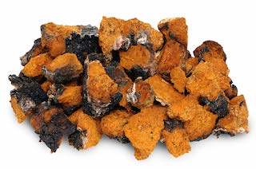

Fungi, including mushrooms, are peculiar forms of life. They pop up, seemingly overnight, out of nowhere. And unlike plants, they’re not green, they don’t have leaves or roots, and they never form flowers, fruits, or seeds.
Evolutionarily speaking, fungi are more closely related to humans than plants.
This fact may be why many of the components that help mushrooms defend themselves against their enemies also support your body’s defense mechanisms and are increasingly being seen as a legitimate means to enhance your health and well-being. Modern scientists are discovering some fascinating healing properties of mushrooms. And more than a hundred species of mushrooms are currently being studied across around the world today for their potential health benefits.
The Extraordinary Health Benefits of Mushrooms
Here are five health benefits of mushrooms that have been identified by extensive scientific research:
#1 - Increasing Antioxidant Activity

Chaga Mushrooms: "The king of medicinal mushrooms"
All available evidence indicates that, at high levels, free radicals damage various structures in your body’s cells. This cellular damage contributes to an increase in your risk for developing many health problems, including those related to aging. This is why decreasing or inactivating free radicals can lead to huge benefits for your health. Promisingly, many mushrooms also contain powerful ingredients that have been found to neutralize free radicals.
Another medicinal mushroom, chaga, is also known for its antioxidant properties — indeed, according to a report in the International Journal of Biological Macromolecules, a Chaga polysaccharide has been found to possess “strong antioxidant activity for scavenging free radicals.”
Similarly, the journal Carbohydrate Polymers reports that polysaccharides present in the fungus Cordyceps have been shown to “improve the antioxidation activity in immunosuppressed mice (and to) significantly increase… total antioxidant capacity.” The great news is that Cordyceps not only helps to neutralize harmful free radicals, it also enhances the activity of your body’s innate antioxidant systems.
#2 - Enhancing the Immune System
Every second of every day, your immune system is working overtime to clear away debris, to fight off cancer cells, and support your body achieve vibrant, healthy functioning. It’s an extraordinarily complex and multifaceted system. And sometimes, especially as you age, your immune system can begin to wear down and function less effectively.
Mushrooms can help. They boost both the levels and activity of many vital components of your immune system — and may even “prime” immune cells so that they become more effective in responding to future infections and attacks.
Reishi Mushrooms: "The mushroom of immortality"
Macrophages are a type of immune white blood cell that engulfs and digests cellular debris, foreign substances, microbes, cancer cells, and anything else in your body that does not appear healthy to the immune system. A Chaga mushroom polysaccharide has been shown to induce rapid increases in macrophages in mice.
In one study, 34 patients with advanced stages of cancer were treated for 12 weeks with a Reishi-sourced polysaccharide. The patients who were given the treatment showed substantial improvements in the effectiveness of their immune function.
Shiitake is one of the most popular and best-studied mushrooms in the world today. These mushrooms contain a polysaccharide known as Lentinan, which Cancer Detection and Prevention Journal has described as “a unique class of immunopotentiator” that helps to improve the quality of life and extend survival. In a 2014 study reported in the Journal of the American College of Nutrition, researchers gave 52 healthy young adults either five or 10 grams of dried Shiitake mushrooms daily for four weeks. Consuming mushrooms was associated with a substantial increase in the number and effectiveness of both “T immune cells” and natural killer cells.
#3 - Managing Blood Sugar Levels
Mushrooms may also be useful in managing safe levels of blood sugar. Compounds from the parasitic fungus Cordyceps have been shown to help support balanced blood sugar levels. For example, a study published in the journal Biological and Pharmaceutical Bulletin found that a Cordyceps polysaccharide showed “potent hypoglycemic (blood sugar lowering) activity in genetic diabetic mice,” while “plasma glucose level was quickly reduced in normal and streptozotocin-induced diabetic mice.”
One of the most common and devastating complications that can be caused by diabetes is diabetic nephropathy. Over time, the condition can cause the kidneys to malfunction and, eventually, to fail. In one promising study, Cordyceps was shown to significantly reduce blood glucose levels, lower kidney breakdown markers, and preserve renal function in mice.
#4 - Supporting Brain Health
The ball-shaped mushroom with cascading icicle-like spines known as Lion’s Mane has a long history of use in traditional Chinese medicine. Once reserved for royal families, Lion’s Mane contains up to 20% protein and is considered to be a gourmet dish by many. Potent compounds in Lion’s Mane have been shown to activate a very important peptide (a small protein) known as “nerve growth factor” or NGF. NGF is necessary for the growth, maintenance, and survival of the neurons in your brain.
Lions Mane Mushrooms: The first "smart" mushrooms that may boost mood and memory
These Lion’s Mane compounds stimulate your neurons to re-grow and trigger a process known as re-myelination, which helps to keep your neurons healthy and maintains their ability to conduct electrical signals efficiently. In one small Japanese clinical study, elderly men and women with mild cognitive impairment (MCI) were given Lion’s Mane for 16 weeks. Throughout the study period, the mushroom-eating group showed significantly increased scores on a cognitive function scale compared with the placebo group. But if they stopped consuming the mushroom, their advantage disappeared.
Short-term memory refers to your ability to hold a small amount of information in your mind in a readily available state for a short period. Visual recognition memory is a measurement of your ability to recognize previously encountered events, objects, or people, and to “remember” them. Both of these types of memory are often lost in people with age-related health conditions. And both of them appear to be supported by eating Lion’s Mane, which has been shown to help prevent the breakdown of spatial short-term and visual recognition memory and delay the onset of cognitive dysfunction.
#5 - Improving Exercise Performance
Mushrooms don’t just help you live longer. They can also help you live better — and stronger. Especially Cordyceps.
Wild mushrooms growing on a log
Cordyceps extracts have been shown to dilate the aorta — the main artery in your body that supplies oxygenated blood to your entire circulatory system — by up to 40%, thereby increasing blood flow and greatly enhancing endurance. What’s more, Cordyceps contains adenosine and can stimulate the production of ATP — one of the main sources of energy in your body’s cells. This may be one of the reasons why it has been found to improve stamina in athletic performance.
In one Japanese study, supplementation with Cordyceps improved the performance of over 70% of long-distance runners. In a 2010 double-blind, placebo-controlled study, a Cordyceps extract known as Cs-4 was given to 20 healthy elderly subjects three times per day for 12 weeks. Supplementation with Cs-4 was found to meaningfully improve their exercise performance and overall wellness.